__untitled.pdf (manifeste d'un usage queer de l'opensource)
_j’ai toujours été fasciné par l’économiseur d’écran, synchronisé avec la musique d’iTunes, du Mac de mon père. C’est sur ce même ordinateur que j’ai commencé à explorer internet. Mon encyclopédie s'est ainsi élargie brusquement et j’avais maintenant accès à des réponses sur tous les sujets possibles. Je pouvais lire des pages wikipedia au hasard, des forums, regarder toutes les vidéos que je trouvais sur la page d'accueil youtube, découvrir des clips, des remix, des tutos, des films. Aujourd'hui, après des milliers d'heures en tant que cyberflâneur.se, je connais mes petits coins préférés d’internet, où je me réfugie souvent. Toute ma pratique artistique est basée et nourrie par le net, en particulier par sa philosophie opensource. Je fais des milliers de moodboards avec des photos qui ne sont jamais les miennes, que je déniche au gré de mes clics de souris. Cela a toujours été ma façon de produire de l'image, des vidéos, des sons et du stylisme. Je suis amoureux.se de la surabondance (overload) propre à internet et ce manifeste sera une ode à ses possibilités.
mais la philosophie de l’opensource soulève bien sûr beaucoup de questions en particulier dans les milieux de la création. Avec un panorama d’Internet actuellement dominé par les géants du web GAFAM (Google, Apple, Facebook, Amazon, et Microsoft) qui possèdent la majorité du marché des navigateurs, du cloud computing, des messageries en ligne, et l’intégralité des systèmes d’exploitation des ordinateurs de bureau et des téléphones mobiles, la philosophie opensource à l’origine de la création du premier réseau cybernétique semble être bien loin. Les codes placés en opensource étaient conçus pour être accessibles au public : n'importe qui pouvaient voir, modifier et distribuer le code à sa convenance. Ce type de logiciel était développé de manière collaborative et décentralisée par une communauté. Peut-on encore jouir d’internet en 2025 de la même manière et avec la même philosophie que dans les années 1980 ? Les algorithmes mis en place par ces géants de l’industrie capitaliste sont-ils assez puissants pour nous censurer si on cherche à les utiliser de manière déviante ? Peut-on avoir une utilisation de leurs outils «queer» au sens de Constanza Spina dans Manifeste pour une démocratie déviante (Editions Trouble, 2023) comme déchirant la normalité ?
ce manifeste est un tutoriel pour que chacun.e se réapproprie internet en utilisant des espaces, des moyens et des codes qui appartiennent en majorité à Meta. Il faut analyser sa pratique du net, se rendre compte de l’ampleur de l’algorithme sur son quotidien et trouver le courage d’apprendre et d’utiliser les moyens mis en oeuvre par les multinationales pour exister de manière «anormale» en ligne. Ce manifeste s’articule autour de trois actions thématiques principales : digger des images, hacktiver des items et queeriser le net et s’appuiera sur des pratiques et des artistes qui ont une pratique déviante de l’opensource.
1_digger des images
_s’emparer
quand je navigue sur internet tout m’appartient. je peux tout posséder en l’enregistrant d’un seul clic. même si un site ou un logiciel m’en empêche, il me suffit d’en faire une capture d’écran. l’image sera mienne, qu’on m’en donne la possibilité ou non. ce principe d’appropriation et de libre échange est une partie intégrante et structurante du web et de la création avec internet.
Le Whole Earth Catalogue pourrait être à la source de ces convictions : publié entre 1968 et 1972 cette initiative de Stewart Brand avait pour but de proposer des «outils» très divers (livres, outils de jardinage, synthétiseurs, chaussures, cabanes) à un grand nombre de personnes. Ces objets étaient référencés dans un magazine mensuel et les lecteurs pouvaient ensuite passer commande et se procurer des «outils» de la contre-culture. Le catalogue était collaboratif, tout le monde pouvait émettre des suggestions d’ajouts pour le numéro suivant à condition que ce soit un outil utile, propice à l’éducation indépendante, étant de haute qualité ou à bas prix, ne faisant pas encore partie du savoir commun et facilement distribuable par colis. L’objet éditorial (consultable gratuitement sur le site https://wholeearth.info/) ressemble à une encyclopédie géante, non exhaustive, avec une quantité d’informations pêle-mêle. Le Catalogue prônait et incarnait un esprit du « fais-le toi-même » et une vision de la technologie comme source de transformation individuelle et collective. Et de manière assez instinctive les premier.e.s ingénieur.e.s au moment de conceptualiser le premier réseau liant les ordinateurs, Arpanet en 1969, s’inspirèrent du Catalogue comme système d’information hyperlié. Alan Kay, informaticien et lauréat du prix Turing pour ses contributions à la création de ce qui est maintenant internet, déclara même « nous imaginions le Whole Earth Catalog comme une version imprimée de ce que serait l’internet». (Fred Turner dans Aux sources de l’utopie numérique, C&F éditions, 2012) En effet, l’agencement des pages web et le design de leurs liaisons reprennent les caractéristiques graphiques et le principe d’encyclopédie non hiérarchisée du Whole Earth Catalog.
Au fur et à mesure qu’internet se développe, les questions d’accessibilité de l’information, des données et des droits d’auteurs se posent. En 1985, sentant que le web est en train d’être capitalisé Richard Stallman crée la Free Software Fondation. Il propose aux programmeurs du monde entier de placer le fruit de leur travail sous licence libre (copyleft), en dehors de toute logique de brevet (copyright) et en marge de tout circuit industriel ou commercial. Il écrit le manifeste GNU (l’acronyme de GNU's Not Unix, UNIX étant l’équivalent commercial du GNU) pour expliquer les valeurs primordiales de ce système : la générosité, le partage, la solidarité et l’échange. Toujours actif, ce principe a permis beaucoup d’avancées et de gains de temps au niveau de la programmation à ses milliers d’utilisateurs.
Aujourd’hui ce principe de partage gratuit a dévié, l’espace du net est devenu accessible à la majorité de l’humanité, et non plus seulement aux quelques programmateurs ou hackers geeks comme aux prémices d’internet. L’information et les images étant gratuites il est devenu commun de télécharger sans avoir la références exacte des photographies, des dessins, des vidéos, des musiques. Le flux d’internet diffuse et irrigue mais perd souvent la source en cours de chemin.
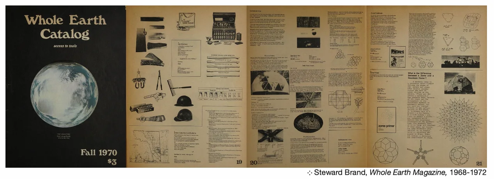 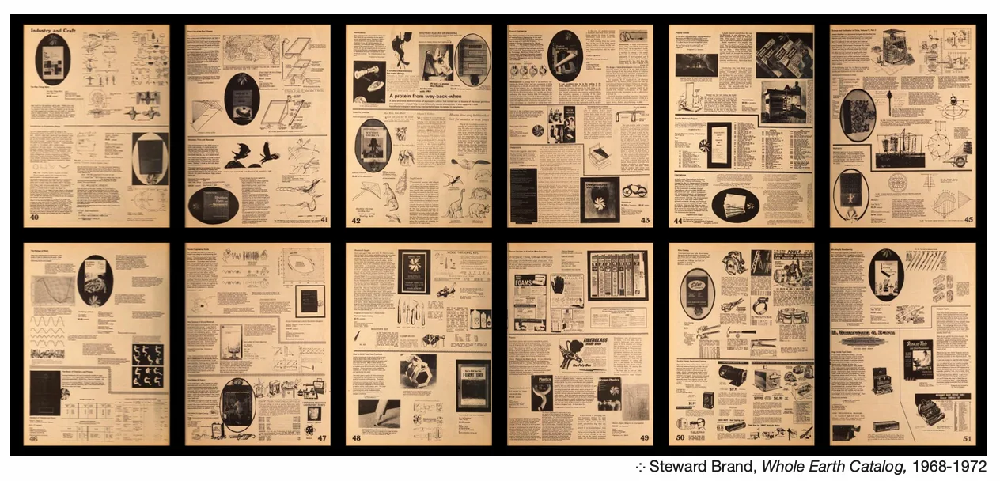
_curater
Sur le modèle de Georges Didi Hubermann ou d’Aby Warburg avant lui, en téléchargeant des JPEG, PDF, PNG sur son ordinateur, en screenant ou en enregistrant ou likant sur Instagram, Pinterest ou Tumblr, je crée une sélection, je trie dans des dossiers, je curate. Je peux les renommer, les placer côte à côte, les superposer, les lier dans les mêmes PDF, les rassembler autour d’un thème, d’une envie, d’une date. J’invente mon propre système de classifications. Je compile. L’œuvre de Henrik Olesen Some Faggy Gestures (2007) est l’exemple parfait de la classification et l’appropriation de ces fichiers numériques (re)matérialisés. L’artiste a passé deux ans à trouver, sélectionner, imprimer des tableaux, des dessins, des photographies de sculpture, des textes allant de l’antiquité au XIXe siècle puis il les a découpés, classés, accrochés sur de grands panneaux noirs et a titré à la main chacun des corpus ainsi obtenus. A première vue, on dirait une énième copie de l’Atlas Mnémosyne, mais en s’approchant on se rend compte que les titres n’ont rien à voir avec ceux d’Aby Warburg : «the effeminate son», «cruising», «the apparence in sodomite in visual culture », «männerfreundschaft» ou «some faggy gesture». La classification des images n’obéit ni à la chronologie ni aux auteurs des sources mais rassemble par similitudes des gestes et des situations. L’artiste leur offre une relecture queer et ironique loin de leur valeur iconographique préexistante dans une institution muséale par exemple. Comme l’analyse Renate Lorenz dans Art queer, une théorie freak, B42, 2013 (p.130), Henrik Olesen réécrit l’histoire de l’art avec la méthode du «speaking backward» et remet en question une histoire hétéronormative en s’appropriant des œuvres d’artistes souvent liés à la monarchie ou à l’Eglise. Il développe une narration alternative même s’il est limité par les droits d’auteurs et se contente d’œuvres* libres de droit (la plus récente est une photographie d'Eadweard Muybridge datant de 1887). Il appartient à chacun de nous, dans sa pratique de capture et d’appropriation d’images glanées sur le net de changer sa lecture et ses narrations en les re-nommant, les re-datant ou en les re-classant volontairement dans un mauvais dossier.*qui peuvent par conséquent être reproduites et exposées sans problème juridique.
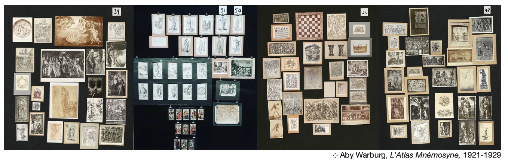 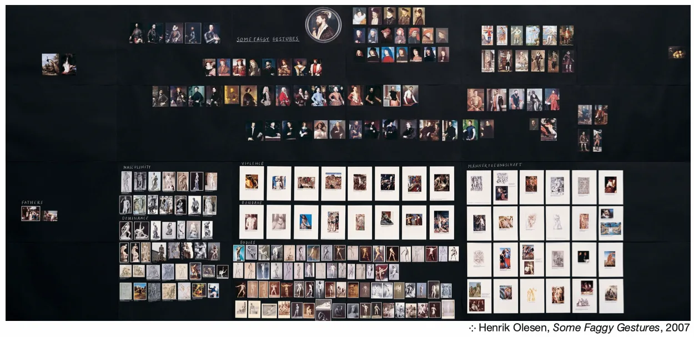
2_hacktiver des items
_(re)assembler
_j’assemble des objets comme j’assemble mes images dans des dossiers numériques. je dois d’abord dénicher ces objets, en fouillant, en explorant, en les glanant, en les échangeant, en les créant. puis je les re-joue d’autant de manières que je le souhaite. Je les assemble, les photographie, les poste, puis je les dé-assemble pour les re-assembler. le cycle marche à l’infini. je possède ainsi ma propre bibliothèque opensource d’objets que je re-joue au gré de mes envies. je réinvente des combinaisons sans avoir à créer de nouveaux éléments. je forme des connexions. je crée mon réseau d’objets, de vêtements, d’imagesC’est la pratique de la plupart des artistes contemporains actuels que Nicolas Bourriaud nomme les «artistes de la postproduction». Il les décrit comme des recycleurs de sons, d’images, de formes qui naviguent de manière incessante dans la culture. Ils sont à l’image de l’internaute qui imagine des relations entre des myriades de sites disparates sur son écran, à la recherche d’une thématique. Leur pratique plastique retrace donc ce recyclage lié au trop-plein d’informations. « La surproduction n’est plus vécue comme un problème, mais comme un écosystème culturel » (Nicolas Bourriaud, Postproduction, Les presses du réel, 2002). L’œuvre d’art n’est plus donnée à voir comme finalité à contempler mais plutôt comme un portail, un générateur, un assemblage d’objets appropriés. On pourrait citer John Armelder, Bertrand Lavier ou encore Haim Steinbach dans leur pratique de la postproduction. Leurs œuvres d’art sont «comme des surfaces de stockage d’informations». Ils démultiplient les exemples de leur propre système d’assemblage et de re-assemblage. Chacune de leurs œuvres se lit comme un panorama regroupant les autres. La postproduction est la génération Ipad-kid du readymade de Marcel Duchamp. Lui qui définit ce principe dans une interview donnée à Francis Roberts en octobre 1963 comme « une œuvre d’art sans artiste pour la faire : un tube de couleur qu’un artiste utilise n’est pas fait par l’artiste ; il est fait par le fabricant qui produit les couleurs. Ainsi le peintre fait réellement un readymade lorsqu’il peint au moyen d’un objet manufacturé qui s’appelle couleurs.» (Thierry De Duve, Résonances du readymade, Edition Jacqueline Chambon, 1989)
Cette pratique artistique d’assemblage et re-assemblage des objets manufacturés pour créer des œuvres d’art pourrait être assimilée à celle des stylistes photo notamment dans le milieu de l’éditorial mode depuis l’avènement d’Instagram il y a une dizaine d’années. Iels sont aussi des artistes de la postproduction, même s’ils sont rattachés au milieu commercial de la mode. Natacha Voranger, styliste, poste ainsi régulièrement des montages photos de ses essayages en amont d’un shooting pour un magazine ou une marque. En scrutant ses silhouettes on aperçoit des objets récurrents, un chapeau, une paire de talons, un sac. Elle crée des silhouettes en readymade en déplaçant, remplaçant, assemblant, re-assemblant, des items vêtements, accessoires ou objets. Elle illustre son cheminement, son processus créatif, nous donne à voir autre chose que l’image finale publiée et imprimée. Elle fabrique tout autant des readymades postproduits que Haim Steinbach, à la place des étagères et des réveils, statues de grenouilles et ailerons de surf; son corps, des talons Jeffrey Campbell, une culotte Ottolinger, une casquette Diesel.
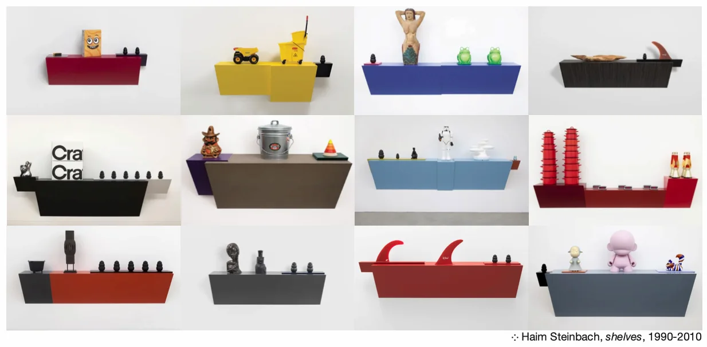 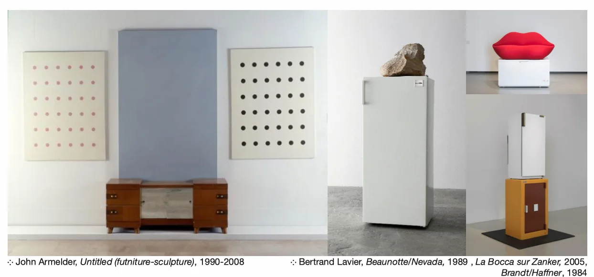 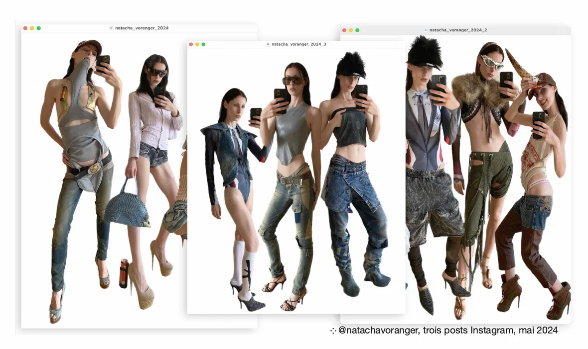
_braconner
en devenant un.e hacktiviste des images, des objets et des vêtements je braconne, selon la définition de Michel de Certeau*, à travers le réseau imposé par les géants multinationaux. je dois réinventer mon usage de ces outils et me détacher des stratégies capitalistes induites dans les lignes de codes de ces applications, dans leur design pervers volontairement addictif créé pour nous procurer de la dopamine à travers du scroll, des notifications, des slides. il faut nous acharner à trouver et à populariser des nouvelles manières-de, façons-de, détournements et appropriations.Lara Mc Grath est une braconnière d’Instagram et de la fast fashion. Sur sa page @thegoatdancerfittingroom, elle poste des dizaines de selfies dans des miroirs de cabines d’essayage de la chaîne de centres commerciaux Westfield. On retrouve donc Zara, Primark, Bershka, Mango,… Mais, à la place d’essayer les vêtements puis de les acheter elle les braconne. Elle attrape plusieurs exemplaires du même article, des manteaux, des chaussures, des jeans. Puis elle les attache entre eux, boutonne l’un avec l’autre, fermetures éclairs opposées, lacets entremêlés. Elle enfile ces nouveaux objets qui ne ressemblent plus du tout à l’exemplaire sur cintre du rayonnage. Seul indice restant : les étiquettes qui pendent de part et d’autres. Elle prend ensuite la pose, se photographie, publie sur cette page instagram dédiée et repose les vêtements. Ni vu ni connu. Elle a utilisé les moyens mis à sa disposition par les multinationales mais les a détournés pour s’en émanciper. Elle a rusé pour les investir, les explorer et décaler leur fonction par son mésusage.
*«Michel de Certeau, anthropologue des croyances et des phénomènes de consommation, développa la notion de “valeur d’usage” pour qualifier l’action de “braconniers actifs” qui, à travers les mailles d’un réseau imposé, (ré)inventent leur quotidien» décrit Jean-Paul Fourmentraux dans AntiDATA, la désobéissance numérique, Les Presses du réel, 2020
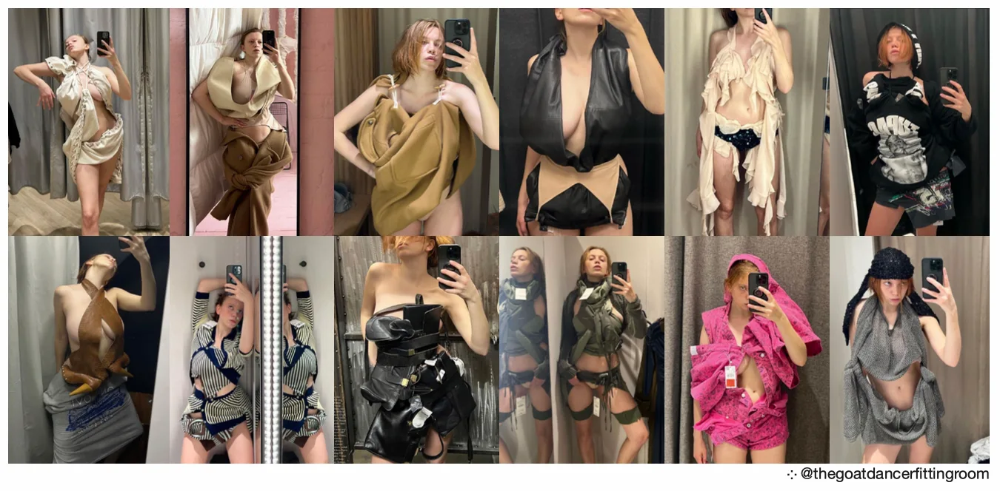
3_queeriser le net
_vandaliser
_avoir un usage queer d’Internet inclut aussi une phase vandale. Hakim Bey dans TAZ (Zone autonome temporaire) définit le contre-web comme «l'usage clandestin, illégal et rebelle du Web, piratage de données et autres formes de parasitage» (Hakim Bey, TAZ Zone autonome temporaire, L’éclat, 1991). En tant que contrebandier et braconnier, le pirate du contre-web doit œuvrer à l’évolution de connections clandestines pour faire circuler l’information. Comme les graffeurs dans la ville, les cybervandales sur le Web doivent afficher à la vue de tous leurs actions tout en restant invisibles. Le 19 juin 2020, anniversaire de l’abolition de l’esclavage au Texas, Donald Trump décide d’organiser le premier meeting de sa campagne à Tulsa, Oklahoma. Pour le contrer, des cybervandales majoritairement regroupés sur des comptes fans de Kpop décident de réserver en masse les 19 000 places du BOK Center sans avoir aucunement l'intention de s'y rendre. Trump se retrouva ainsi devant une salle remplie au tiers de sa capacité le jour J. Les cybervandales ont ainsi utilisé les moyens mis à leur disposition par le net pour vandaliser un événement politique qu’ils considéraient malveillant. Ils ont fait un acte visible sans qu’il soit pour autant reconnaissable et répréhensible.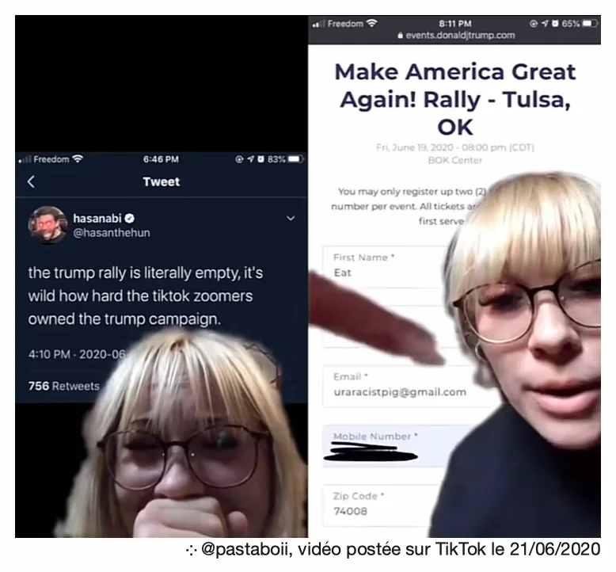 Miguel Adrover est aussi un vandale qui œuvre pour un espace en ligne plus queer. Sur sa plateforme instagram (@migueladroverofficial), il regroupe une public de plus de 106K abonné.e.s. Il poste tous les jours depuis bientôt une dizaine d’années un autoportrait pris dans sa maison reculée en Espagne. Ses autoportraits sont souvent politiques et/ou dénudés, ce qui lui vaut de nombreux avertissements d’Instagram, de censure et de suppression de ses contenus. Le simple like d’un de ses contenus peut vous valoir d’être mis en cause : la directrice du Kunstverein de Munich Maurin Dietrich a été publiquement qualifiée d’antisémite pour avoir liké un portait de Miguel Adrover jugé «antisémite» où il porte une kippah, tient un fusil et est vêtu des drapeaux des USA et d’Israel tachés de sang. Elle a été obligée de se justifier dans un communiqué de presse en disant que son geste d’aimer la publication avait été machinal et ne signifiait pas son adhésion aux propos de Miguel Adrover. Propos qui n’avaient d’ailleurs jamais été prononcés ou écrits car l’artiste communique en images… La pratique de Miguel Adrover est profondément queer et subversive depuis ses défilés à New York dans les années 2000. Mais depuis que son art est passé des podiums à sa page Instagram certains utilisateurs se méprennent sur sa pratique, inhabituelle sur les réseaux sociaux par son caractère révolutionnaire, et signalent tous les jours son contenu. Adrover utilise les moyens mis à sa disposition par Meta pour afficher ses opinions et diffuser son art. Il indique même en description de son compte this page is curated to be seen as a whole. Au lieu de consommer son contenu individuellement, photos par photos au fur et à mesure de ses posts, comme sur d’autres pages Instagram traditionnelles, il nous indique que nous devrions aller regarder son profil et nous attarder sur les images mises en relation avec d’autres dans son feed. En faisant cela, il contrecarre le design d’Instagram et l’algorithme nous poussant à consommer l’individualité instantanée. Il instaure une forme de parasitage des outils de Meta pour faire circuler ses pensées au lieu de vendre son art à des magazines ou des musées pour en tirer un profit.
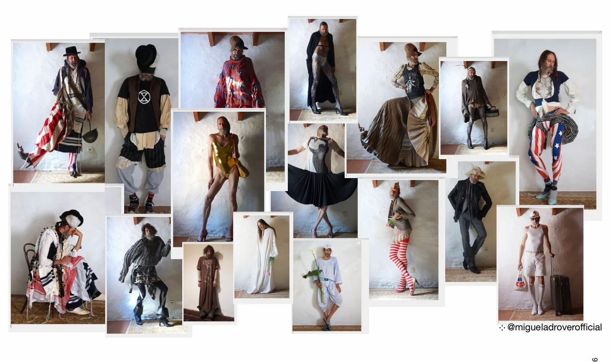
_informer (fair use)
en postant sur internet j’informe, je témoigne de ma présence. même sans le vouloir j’indique toujours aux autres sur le web des informations : ma localisation, mes fréquentations, mes inspirations, mes opinions, … Internet permet donc de partager des ressources intellectuelles autres que ma vie privée à un grand nombre gratuitement. Kenneth Goldsmith a décidé de dédier sa vie à ce concept en créant ubuweb.com un site qu’il a codé seul en 1996 où il publie des sons, des vidéos et de la poésie d’avant-garde extrêmement rare qu’il a collecte, numérise et met en ligne. Le site est classé par ordre alphabétique contrairement aux résultats de recherche Google. Il n’y a ainsi pas de mise en avant d’artistes ou d’œuvres. L’utilisateur doit l’explorer comme dans les rayonnage d’une bibliothèque. Kenneth Goldsmith ne demandait aucun droit d’auteur avant de publier les œuvres ce qui lui a valu de nombreuses menaces d’avocat des ayant-droits ou des galeries représentant certains artistes. Mais il se défendait avec le seul texte de lois pouvant contrer le copyright : le fair use qui dit que «l’usage loyal d'une œuvre protégée, y compris des usages tels la reproduction par copie, l'enregistrement audiovisuel à des fins telles que la critique, (…), l'enseignement, les études universitaires et la recherche, ne constitue pas une violation des droits d’auteurs.» Cette législation appliquée à un site web permet de contourner les lois et les institutions muséales souhaitant garder secrètes des œuvres. Kenneth Goldsmith a ainsi réussi à les battre à leur propre jeu en utilisant les même armes en diffusant et enseignant à un grand nombre gratuitement et facilement.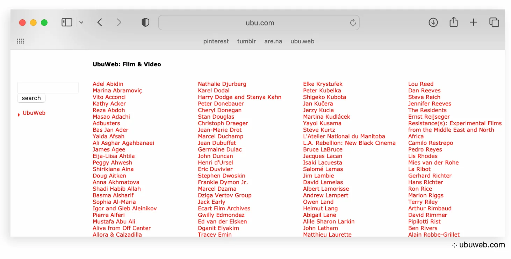 Un autre site comparable dans son principe de mise à disposition d’informations et de ressources est cyberfeminismindex.com , qui est né de la volonté de la graphiste Mindy Seu en 2019 de regrouper des textes et des sites consultables gratuitement autour du féminisme et particulièrement du cyberfeminisme, un courant féministe inclusif né dans les années 1980 faisant du feedback (notion cybernétique essentielle) la clé de la transmission féministe. L’index du site est consultable par ordre chronologique, alphabétique ou par auteur.e.s. Pour une plus large inclusivité, le site est ouvert aux propositions. On trouve ainsi des ressources dans de nombreuses langues et de registres très variables, ce qui en fait une mine d’or culturelle et historique.
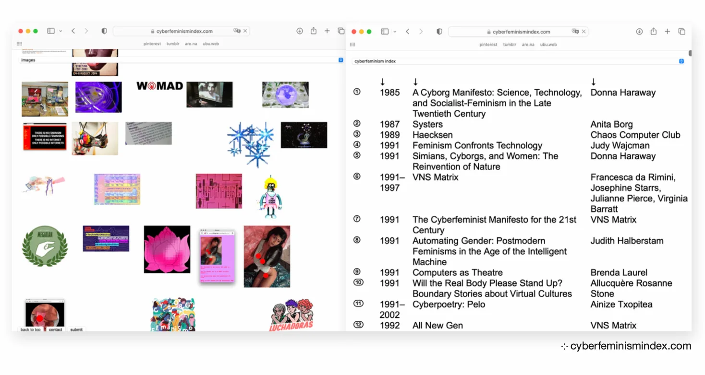 Cette utilisation du net comme source d’information à un niveau politique a contribué à l'affirmation de la quatrième vague féministe (#metoo) et a significativement aidé certaines luttes. Néanmoins, la logique de monétisation, les outils de censure (comme le shadowban) et l'algorithme font que seules certaines voix parviennent à se faire entendre. La prise de parole politique sur les réseaux sociaux peut devenir performative et qualifiée de slacktivism. L’engagement via Instagram ou Twitter au fil des stories ou des posts est flexible, moins bien structuré et efficace que la lutte syndicale par exemple. Constanza Spina dans Manifeste pour une démocratie déviante (Editions Trouble, 2023) propose une solution pour que les comptes politiques féministes, queer, antiracistes devenus trop populaires et puissants ne deviennent pas une parole unique et prise comme véridique. Il faudrait que le compte tombe dans le domaine collectif : maintenant que la visibilité et l'influence sont devenues un capital, il est important qu’il soit redistribué à des corps intermédiaires communs.
_conclusion
_il est primordial de repenser le rapport à l’autre et à la création dans nos interactions numériques autant que sociales. Il faudrait s’efforcer de démocratiser la culture opensource d’une manière raisonnée et utile tout en tirant profit des outils mis à notre disposition par le capitalisme actuel. Il est important de les exploiter en les diggant, en les hacktivant et en les queerisant.Il s’agit de : prioriser un rapport personnel aux médias et à la communauté qu’on peut y construire, de favoriser les dialogues et les échanges qui peuvent se créer, et partager le plus gratuitement les ressources intellectuelles ou matérielles tout en veillant à indiquer ses sources publiquement, à identifier tout ce qu’on poste sur les réseaux sociaux qui ne serait pas notre, à personnaliser nos pages ; notre espace personnel sur internet. On peut se tourner vers d’autres plateformes indépendantes : Are.na.com, Ravelry, Mastodon…
J’essaie dans ma pratique de l’image et plus particulièrement du stylisme de m’éloigner d’une vision productiviste de la mode. Je cherche à partager en créant des looks mettant en valeurs des créations d’artistes que je valorise, que je cite, que je met en avant. J’utilise la méthode décrite dans ce manifeste en amont de chaque shooting. Je digge d’abord des inspirations puis des pièces, je les hacktive en changeant leur fonction, en les associant, en les piratant pour enfin créer des silhouettes déviantes, déviées, détournées, queer. Cette ligne de conduite a toujours été mon guide pour naviguer dans l’immensité du net et arpenter ses millions de données.
- marceline hebert
article de mémoire réalisé en 2024/2025
à l’école duperré en section stylisme, image et médiatisation
à tous.tes mes ami.e.s rencontré.e.s au sein de l'école et ailleurs qui m'inspirent au quotidien,
à ma famille, à mes professeurs
et à toutes ces personnes croisées sur le net
annexe vidéo : untitled.mp4 (avatarization of the self in 10 acts) 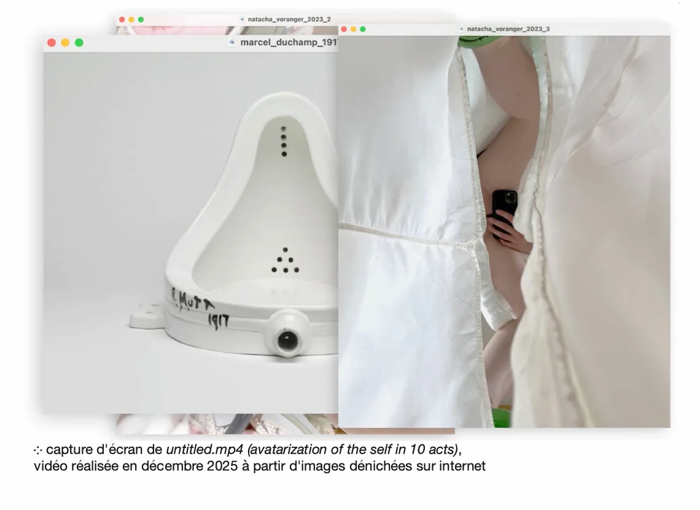